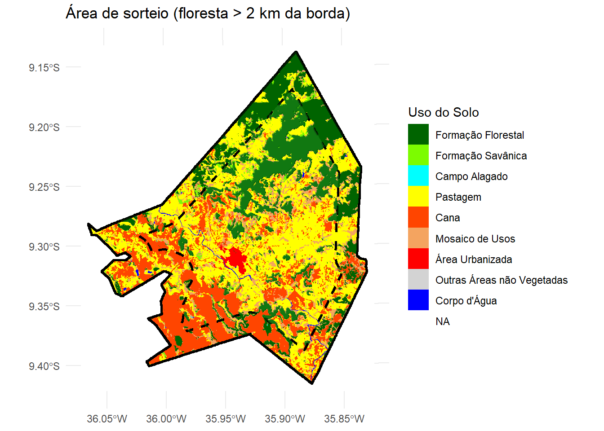
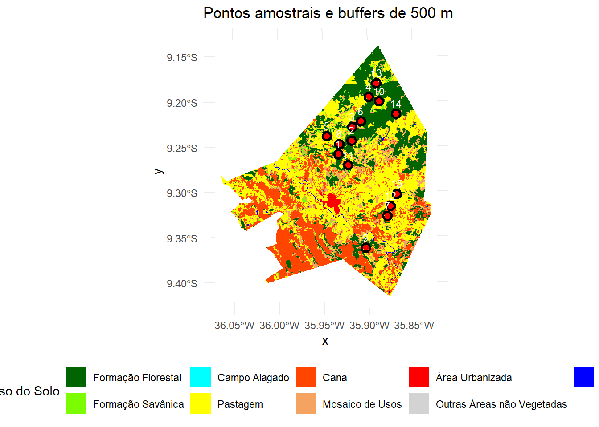
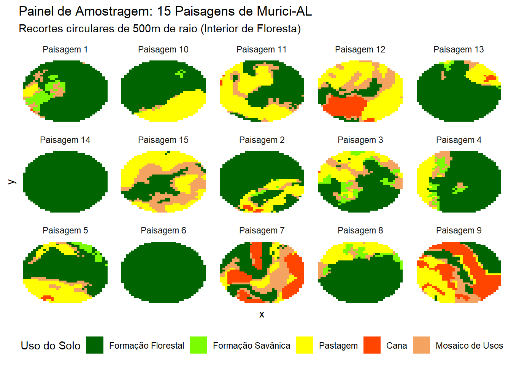

# install.packages("terra")
# install.packages("tidyverse")
# install.packages("tidyterra")
# install.packages("landscapemetrics")
# install.packages("ggplot2")
library(terra)
library(tidyverse)
library(tidyterra)
library(landscapemetrics)
library(ggplot2)
r_murici <- rast("2024_murici.tif")Exercício 4 - Amostragem de Paisagens com Restrição de Borda — Murici-AL
Análise espacial com terra, tidyverse e landscapemetrics
1 Contexto do exercício
Neste exercício trabalhei com um mapa de uso e cobertura da terra do município de Murici (AL), obtido por classificação de imagens de satélite. O objetivo é selecionar 15 pontos amostrais no interior de remanescentes florestais que estejam a pelo menos 2 km da borda do mapa (para evitar efeitos de borda não controlados). Em cada ponto foi extraído um buffer circular de 500 m de raio e calculada a composição percentual de cada classe de uso do solo.
Adicionalmente, utilizei o pacote landscapemetrics para calcular métricas de diversidade (Shannon), proporção de floresta e densidade de borda para cada uma das 15 paisagens amostrais.
NoteArquivo necessário
Para a realização dessa atividade foi utilizado o arquivo raster 2024_murici.tif fornecido pelo professor. Coloquei ele no diretório de trabalho antes de executar o código.
2 Preparando o ambiente
3 Projeção e legenda
O arquivo original está em coordenadas geográficas (lat/long). Para trabalhar com distâncias em metros (ex.: 2000 m, 500 m) é obrigatório projetá-lo para um sistema de coordenadas planas (UTM - Universal Transversa de Mercator). Usaremos o fuso 25S (EPSG:31985), adequado para Alagoas.
r_utm <- project(r_murici, "EPSG:31985", method = "near")
WarningDúvida
Existem sistemas de coordenadas planas para diferentes estados? Como saber qual sistema utilizar para a localidade que estoutrabalhando ou que venha a trabalhar?
As classes originais estão codificadas por números. Associá-los os rótulos e cores
legenda <- data.frame(
id = c(3, 4, 11, 15, 20, 21, 24, 25, 33),
Categoria = c("Formação Florestal", "Formação Savânica", "Campo Alagado",
"Pastagem", "Cana", "Mosaico de Usos", "Área Urbanizada",
"Outras Áreas não Vegetadas", "Corpo d'Água"),
Cores = c("#006400", "#7cfc00", "#00ffff", "#ffff00", "#ff4500",
"#f4a460", "#ff0000", "#d3d3d3", "#0000ff")
)
levels(r_utm) <- legenda[,1:2]4 Definição da área de sorteio segura
Para evitar pontos muito próximos à borda do mapa, criamos um buffer negativo de 2000 m a partir do limite total do município. A área de sorteio será a interseção entre as florestas e essa região interna.
vetor_total <- as.polygons(r_utm, dissolve = TRUE)
municipio_limite <- aggregate(vetor_total)
limite_seguro <- buffer(municipio_limite, width = -2000)
floresta <- vetor_total[vetor_total$Categoria == "Formação Florestal", ]
area_sorteio <- crop(floresta, limite_seguro)
if (is.list(area_sorteio)) {
area_sorteio <- do.call(rbind, area_sorteio)
}
if (nrow(area_sorteio) == 0) {
stop("Erro: Nenhuma floresta encontrada a mais de 2km da borda.")
}Após rodar os chunks acima, é possível visualizar a área de sorteio com ggplot2 + tidyterra:
matriz_reclass <- cbind(legenda$id, 1:nrow(legenda))
matriz_reclass <- rbind(matriz_reclass, c(NA, 0))
r_classificado <- classify(r_utm, matriz_reclass)
r_fator <- as.factor(r_classificado)
ggplot() +
geom_spatraster(data = r_utm) +
scale_fill_manual(values = legenda$Cores, na.value = "white", name = "Uso do Solo") +
geom_spatvector(data = municipio_limite, fill = NA, color = "black", linewidth = 1) +
geom_spatvector(data = limite_seguro, fill = NA, color = "black", linetype = "dashed", linewidth = 1) +
geom_spatvector(data = floresta, fill = "darkgreen", alpha = 0.3, color = NA) +
geom_spatvector(data = area_sorteio, fill = "forestgreen", alpha = 0.5, color = NA) +
labs(title = "Área de sorteio (floresta > 2 km da borda)") +
theme_minimal()<SpatRaster> resampled to 500736 cells.
WarningDúvida
Já tentei mudar a classe do id para character, mas o mesmo erro continua ocorrendo, não sei o que fazer ou como resolver
5 Sorteio de pontos com distância mínima
Sortear 15 pontos dentro da área segura, garantindo distância mínima de 1000 m entre eles.
set.seed(1234)
pontos_finais <- NULL
tentativas <- 0
while(is.null(pontos_finais) || nrow(pontos_finais) < 15) {
tentativas <- tentativas + 1
cand <- spatSample(area_sorteio, size = 1, method = "random")
if (nrow(cand) > 0) {
if (is.null(pontos_finais)) {
pontos_finais <- cand
} else {
dists <- distance(cand, pontos_finais)
if (min(dists) >= 1000) {
pontos_finais <- rbind(pontos_finais, cand)
}
}
}
if (tentativas > 5000) break
}6 Buffers e extração da composição da paisagem
Atenção: Antes de criar os buffers, verificamos se o CRS dos pontos é compatível com o raster.
# Verificar CRS
if (!identical(crs(pontos_finais), crs(r_utm))) {
pontos_finais <- project(pontos_finais, crs(r_utm))
}
buffers <- buffer(pontos_finais, width = 500)
buffers$id_paisagem <- 1:nrow(buffers)
# Extração e processamento
extracao <- terra::extract(r_utm, buffers)
nome_col_raster <- names(extracao)[2]
tabela_final <- extracao %>%
rename(id_buffer = ID, categoria_bruta = !!sym(nome_col_raster)) %>%
group_by(id_buffer) %>%
mutate(total_px = n()) %>%
group_by(id_buffer, categoria_bruta) %>%
summarise(
pixels = n(),
percentagem = (pixels / first(total_px)) * 100,
.groups = "drop"
) %>%
mutate(Categoria_Limpa = as.character(categoria_bruta)) %>%
left_join(legenda %>% select(Categoria, Cores), by = c("Categoria_Limpa" = "Categoria"))
write.csv(tabela_final, "uso_solo_murici_final.csv", row.names = FALSE)
writeVector(pontos_finais, "pontos_final.shp", overwrite=TRUE)
TipVisualização opcional (execute manualmente)
Para ver os pontos e buffers sobre o mapa com ggplot2 + tidyterra:
ggplot() +
geom_spatraster(data = r_utm) +
scale_fill_manual(values = legenda$Cores, na.value = "white", name = "Uso do Solo") +
geom_spatvector(data = buffers, fill = NA, color = "black", linewidth = 1) +
geom_spatvector(data = pontos_finais, color = "red", size = 2, shape = 19) +
geom_spatvector_text(data = pontos_finais, aes(label = 1:15),
color = "white", size = 3, vjust = -0.8) +
labs(title = "Pontos amostrais e buffers de 500 m") +
theme_minimal() +
theme(legend.position = "bottom")<SpatRaster> resampled to 500736 cells.
7 Análise com landscapemetrics
Agora vamos calcular para cada um dos 15 buffers as seguintes métricas:
- Diversidade da paisagem – Índice de Shannon (lsm_l_shdi)
- % de cobertura florestal – Proporção da classe “Formação Florestal” (lsm_c_pland)
- Densidade de borda da classe floresta – lsm_c_ed (edge density, em m/ha)
# Identificar o valor numérico da classe Floresta
id_floresta <- legenda$id[legenda$Categoria == "Formação Florestal"]
# Lista para armazenar métricas de cada buffer
metricas_lista <- list()
for(i in 1:nrow(buffers)) {
# Recortar o raster para o buffer i
crop_i <- crop(r_utm, buffers[i,])
mask_i <- mask(crop_i, buffers[i,])
# Calcular Shannon diversity (nível da paisagem)
shannon <- lsm_l_shdi(mask_i)
# Calcular métricas de classe para todas as classes
pland_all <- lsm_c_pland(mask_i) # percentual de cada classe
ed_all <- lsm_c_ed(mask_i) # densidade de borda por classe
# Filtrar apenas a classe floresta
pland_floresta <- pland_all %>% filter(class == id_floresta)
ed_floresta <- ed_all %>% filter(class == id_floresta)
# Extrair valores (se não houver floresta, colocar NA ou 0)
div_shannon <- shannon$value
perc_floresta <- ifelse(nrow(pland_floresta) > 0, pland_floresta$value, 0)
dens_borda <- ifelse(nrow(ed_floresta) > 0, ed_floresta$value, NA)
# Guardar
metricas_lista[[i]] <- data.frame(
id_buffer = i,
diversidade_shannon = div_shannon,
perc_floresta = perc_floresta,
densidade_borda_m_ha = dens_borda
)
}
# Combinar tudo
metricas_paisagem <- bind_rows(metricas_lista)
print(metricas_paisagem) id_buffer diversidade_shannon perc_floresta densidade_borda_m_ha
1 1 0.7507504 78.22410 44.41351
2 2 0.7551841 75.62028 53.66340
3 3 1.2318169 49.41922 53.94980
4 4 0.8906418 71.73679 33.35833
5 5 1.0747283 57.00326 63.86672
6 6 0.0000000 100.00000 0.00000
7 7 1.3336246 31.62939 74.45502
8 8 0.8789672 70.95745 25.38790
9 9 1.3141271 23.73247 48.22454
10 10 0.7153538 69.32907 24.34106
11 11 1.0003162 44.07684 58.11278
12 12 1.2808703 13.84452 44.74460
13 13 0.6093134 83.75527 24.81909
14 14 0.0000000 100.00000 0.00000
15 15 1.0722640 23.58591 53.09069write.csv(metricas_paisagem, "metricas_landscapemetrics.csv", row.names = FALSE)8 Painel de paisagens
Gerar um painel 5x3 com os recortes circulares de cada ponto. Use geom_tile() em vez de geom_raster() para evitar avisos de desalinhamento.
lista_recortes <- list()
for(i in 1:nrow(buffers)) {
crop_i <- crop(r_utm, buffers[i, ])
mask_i <- mask(crop_i, buffers[i, ])
df_i <- as.data.frame(mask_i, xy = TRUE, cells = TRUE)
df_i$id_buffer <- paste("Paisagem", i)
lista_recortes[[i]] <- df_i
}
df_painel <- bind_rows(lista_recortes)
ggplot(df_painel) +
geom_tile(aes(x = x, y = y, fill = Categoria)) +
scale_fill_manual(values = setNames(legenda$Cores, legenda$Categoria)) +
facet_wrap(~id_buffer, nrow = 3, ncol = 5, scales = "free") +
theme_minimal() +
labs(title = "Painel de Amostragem: 15 Paisagens de Murici-AL",
subtitle = "Recortes circulares de 500m de raio (Interior de Floresta)",
fill = "Uso do Solo") +
theme(axis.text = element_blank(),
axis.ticks = element_blank(),
panel.grid = element_blank(),
legend.position = "bottom")